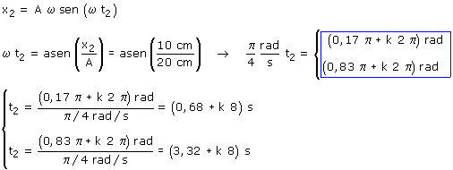
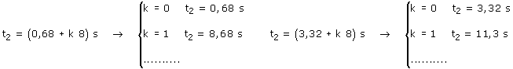

b)
Ecuaciones del movimiento:
|
|
Parámetros A = 20 cm, ω = π/4 rad/s (T = 2π/ω = 8 s) φ = 0 |

Aplicación:
Datos: x2 = 10 cm, Incógnitas: t2

Se obtienen dos series de infinitos valores del tiempo separados por el valor del período (8 s)

La primera serie de tiempos corresponde a una fase 0.17π:
el móvil estará a la derecha del observador (x = 10 cm)
moviéndose hacia la derecha
La segunda serie de tiempos corresponde a una fase 0.83π: el móvil
estará a la derecha del observador (x = 10 cm) moviéndose
hacia la izquierda
En cada oscilación, el móvil pasa dos veces por cada posición y lo hace con velocidades iguales y opuestas (Excepto en cada uno de los extremos donde está una sola vez con velocidad 0)
Valores del tiempo ordenados: t2 = 0,68, 3,32, 8,68, 11,3,...s
 | t = 0,68 s x = 10 cm v = 13.6 cm/s |
¿Has notado que entre dos pasos consecutivos no transcurre el mismo tiempo? ¿sabes por qué?